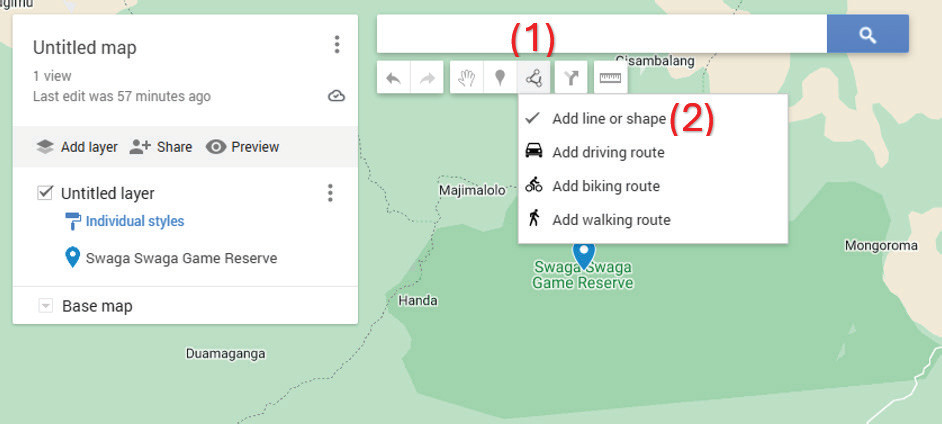
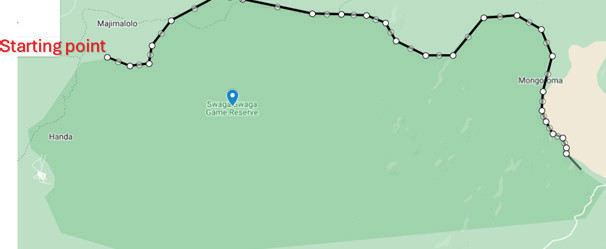

Figure 10: Selecting different drawing tools
5. Start drawing the map by tracing the boundary of Swaga Swaga Game Reserve, as shown in Figure 11.

Figure 11: Drawing a boundary of Swaga Swaga Game Reserve
6. Continue drawing until you return to the starting point to complete the boundary of Swaga Swaga Game Reserve. Once the boundary is complete, the cursor will change from an additional sign to a pointing finger. Click the left mouse button or double-tap the right mouse button if using a touch screen to complete the drawing. Finally, type the word “Swaga Swaga” in place of “Polygon 1” and click “Save,” as shown in Figure 12.